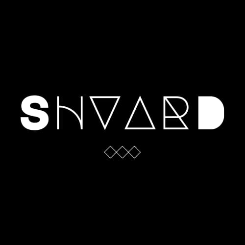
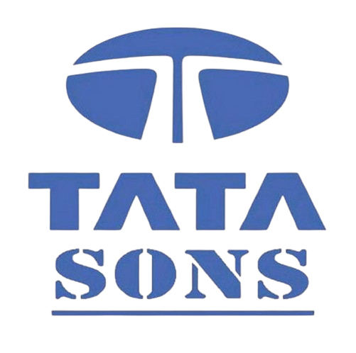

<ion-header id="ion-header">
  <ion-toolbar class="ion-top-bar">
    <div id="ion-toolbar-content">
      
      <ion-title>
        SHVARD ChatBot
      </ion-title>
      <div class="ion-toolbar-content-right">
        <ion-text color="light">Welcome, {{username}}</ion-text>
        <ion-button (click)="logout()" class="logout-button">Logout</ion-button>
      </div>
    </div>
  </ion-toolbar>
</ion-header>

<ion-content [fullscreen]="true">
  <div class="content">
    <div class="image-container">      
    
      
      
    </div>
    <div class="ion-text-center">
      <p>
        Welcome to the SHVARD ChatBot. 
      </p>
    </div>
    <div class="button-group-container">
      <div id="ion-button-group" class="ion-button-group">
        <ion-button expand="block" fill="outline" (click)="dss()">
          Decision support system
        </ion-button>
        <ion-button expand="block" fill="outline" (click)="lkb()">
          Law knowledge bot
        </ion-button>
        <ion-button expand="block" fill="outline" (click)="rs()">
          Recommendation system
        </ion-button>
      </div>
    </div>
  </div>
</ion-content>
<ion-footer collapse="fade">
  <ion-toolbar>
      <span> © 2023 SHVARD ChatBot <sub>All Rights Reserved </sub></span>
    <br>
    <div id="credits">
    <span>Devloped by: <sub>Rajaraman S | Harinarayanan S G | Vignesh Ram Narayanan | Sharon Joe | Dhakshin A V</sub> </span>
    <br>
    <span>Under the Guidance of: <sub>Dr.V.S.Shankar Shriram | Dr.H.Anila Glory</sub> </span>
    </div>
  </ion-toolbar>
</ion-footer>